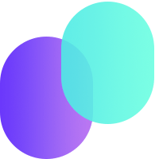

Search Scraper
Input the keyword you want to search in follow textarea, the system will use required search engine to scrape the keyword
input keywords, per one per line
search enginer

Collect search results, qualify leads with AI, extract contact info, and export outreach-ready data.
Keywords, engine, page, concurrency.
Proxies, local browser, accounts, AI recovery.
Score leads and classify industries.
CSV with links, scores, email, phone, address.
Enter specific keywords, one per line. Use AI expansion when you want broader coverage.
Begin with 5-10 keywords and concurrency 1-3. Scale only after results look healthy.
Rotate proxies for larger jobs and reduce concurrency if blocks or captchas appear.
Required for Yandex and recommended for Google at scale or stricter anti-bot flows.
Google and Yandex accounts improve access for larger authenticated scraping tasks.
Let AI inspect errors and suggest recovery actions during difficult runs.
Analyze first, extract contacts second, and prioritize leads scoring 70% or higher.